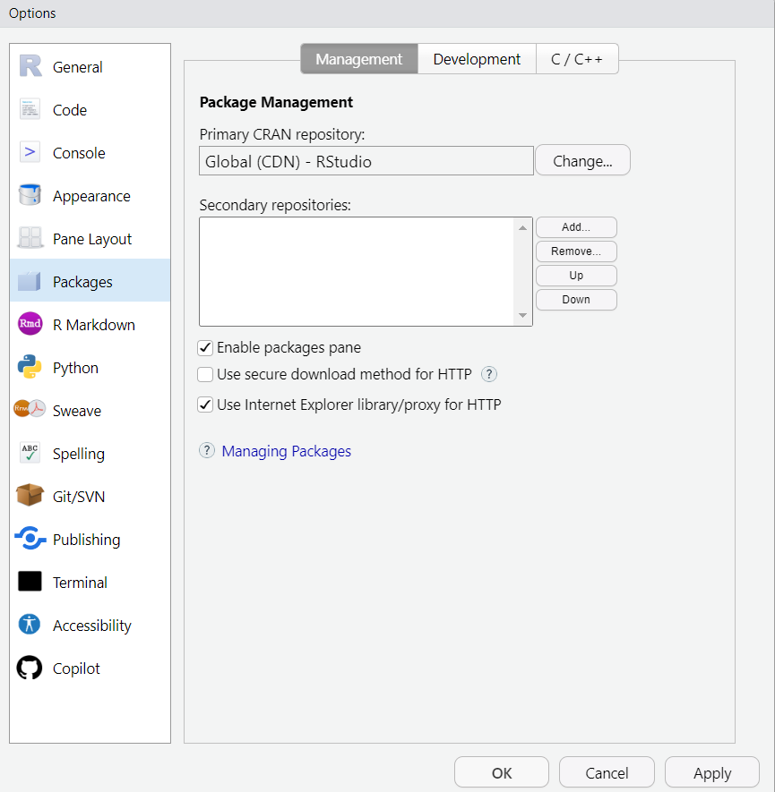

install.packages("tidyverse") Guia para el estudiante
Tema 1:
Conceptos básicos de R:
Operadores:
Los operadores son los símbolos que indican una operación específica. En R, hay varios tipos de operadores como aritméticos (+, -, *, /, %%, ^), de asignación (<-, ->, =), de comparación (==, !=, <, <=, >, >=), lógicos (&, |, !), y otros.
Tipos de datos:
R tiene varios tipos de datos, incluyendo numéricos (enteros y reales), caracteres (texto), lógicos (verdadero o falso).
Funciones y paquetes:
Las funciones son bloques de código que realizan una tarea específica. Los paquetes son colecciones de funciones y conjuntos de datos desarrollados por la comunidad.
Directorio de trabajo:
Es el lugar en tu computadora donde R busca archivos para importar y a donde exporta, a menos que se indique lo contrario.
Entorno de trabajo:
Es donde R almacena objetos (como vectores, matrices, listas, data frames) y resultados de cálculos durante una sesión.
Instalación de paquetes en R
Para instalar un paquete en R desde CRAN (Comprehensive R Archive Network), puedes usar la función install.packages(). Te recomendamos que antes de instalar librerías vayas a Tools > Global Options > Packages y remuevas el visto en Use secure method for HTTP como podrás ver en la imagen.

Por ejemplo, para instalar el paquete tidyverse, usarías el siguiente comando en el panel de Consola:
Después de la instalación, necesitas cargar el paquete si quieres acceder a sus funciones. Esto se hace con la función library():
library(tidyverse) ── Attaching core tidyverse packages ──────────────────────── tidyverse 2.0.0 ──
✔ dplyr 1.1.2 ✔ readr 2.1.4
✔ forcats 1.0.0 ✔ stringr 1.5.0
✔ ggplot2 3.4.3 ✔ tibble 3.2.1
✔ lubridate 1.9.2 ✔ tidyr 1.3.0
✔ purrr 1.0.2
── Conflicts ────────────────────────────────────────── tidyverse_conflicts() ──
✖ dplyr::filter() masks stats::filter()
✖ dplyr::lag() masks stats::lag()
ℹ Use the conflicted package (<http://conflicted.r-lib.org/>) to force all conflicts to become errorsEn tu consola de R podrás ver un mensaje que indica las librerías que componen el tidyverse se han añadido a tu entorno de trabajo. Con estas librería podrás: leer archivos y convertirlos en tibbles o data frames, realizar operaciones de limpieza, imputación y calculo de nuevas variables, visualizar tus datos con una sintaxis sencilla, entre otras operaciones que te invitamos a explorar en:
Libros recomendados
Aquí te dejo algunos libros que podrían ser útiles para aprender más sobre programación con R y tidyverse, así como estadística moderna:
- Introduction to Modern Statistics por Johanna Hardin, Mine Çetinkaya-Rundel
- R for Data Science por Hadley Wickham & Garrett Grolemund.
- Advanced R por Hadley Wickham.
Crear un proyecto en RStudio
Aquí te muestro cómo puedes crear un nuevo proyecto en RStudio: - Abre RStudio. - Haz clic en “File” en la barra de menú superior. - Selecciona “New Project”. - Elige la opción que prefieras (“New Directory”, “Existing Directory” o “Version Control”), luego sigue las instrucciones en pantalla. - Una vez que hayas configurado tu proyecto, haz clic en “Create Project”.
Tema 2:
Comprendiendo el entorno de desarrollo RStudio con operaciones básicas
RStudio es un entorno de desarrollo integrado (IDE) para R. Tiene cuatro paneles principales:
- Consola (parte inferior izquierda): Aquí es donde R espera que le des instrucciones. Para ejecutarlas y obtener el resultado, pulsas Enter.
- Editor de sintaxis o Script (parte superior izquierda): Aquí puedes escribir las instrucciones línea por línea. Las instrucciones las puedes ejecutar una a una o las puedes seleccionar y ejecutar en bloque.
- Entorno/Environment (parte superior derecha): Aquí se irán registrando los objetos que vayas creando en la sesión de trabajo.
- Varias pestañas (parte inferior derecha): Incluye pestañas como Files, Plots, Packages, Help y Viewer. Cada pestaña tiene su propia función, como visualizar gráficos, gestionar paquetes y buscar ayuda.
Importación de datos en R desde diferentes fuentes con readr
Para leer archivos separados por punto y coma (;), puedes usar la función read_csv2():
# Cargar el paquete library(readr)
# Leer el archivo CSV
datos <- read_csv2("ruta/del/archivo.csv")
# Para leer archivos separados por tabuladores, puedes usar la función read_tsv():
# Cargar el paquete
library(readr)
# Leer el archivo TSV
datos <- read_tsv("ruta/del/archivo.tsv")Introducción del concepto de operaciones concatenadas con la pipe
El operador pipe %>% es útil para concatenar múltiples operaciones con dplyr. Permite escribir una secuencia de operaciones de izquierda a derecha. Por ejemplo:
# Sin usar pipe
resultado <- funcion3(funcion2(funcion1(datos)))
# Usando pipe
resultado <- datos %>% funcion1() %>% funcion2() %>% funcion3()Aquí tienes otro ejemplo que muestra cómo se pueden encadenar varias funciones con la pipe para realizar un análisis de datos:
# Usando pipe para encadenar varias funciones en R
datos %>%
filter(variable1 > 50) %>%
select(variable2, variable3) %>%
summarise(media = mean(variable3)) En este ejemplo, primero se filtran las filas de datos donde variable1 es mayor que 50. Luego, se seleccionan variable2 y variable3. Finalmente, se calcula la media de variable3. Todo esto se hace en una sola línea gracias al operador pipe %>%.
Tema 3
En las dos primeras clases, aprendiste sobre R, tidyverse y cómo importar y manejar datos. Ahora, vamos a aplicar esos conocimientos para entender la importancia del análisis de datos migratorios.
Conceptos claves sobre la migración:
- Corrientes o flujos migratorios: Se refiere a la cantidad de personas migrantes que se mueven hacia otro lugar (o desde otro) para establecerse.
- Desplazados: Personas que han abandonado su lugar de origen por temor ante peligros diferentes a los que amparan el estatuto de personas refugiadas.
- Emigración: Consiste en salir de un país para asentarse en otro de forma temporal o definitiva. - Extranjero: Una persona extranjera es aquella que no tiene la nacionalidad de un tercer país.
- Inmigrante: Todas aquellas personas de otro país que ingresan en un tercero para establecerse en él.
- Migración: Movimientos poblacionales hacia otros Estados o bien a otras partes de un mismo país.
- Migrante: Personas que van a otro país o región con el objetivo de mejorar su vida, así como la de sus familias. Puede haber diferentes tipos de migrantes, dependiendo de las razones que le hayan empujado a migrar.
- País de origen, de tránsito o de destino: El país de origen es donde sale la persona migrante. Los países de tránsito son aquellos por los que pasa la persona migrante en su trayecto hacia el país de destino, el fin de su trayecto.
- Persona refugiada: Personas que “con fundados temores de ser perseguida por motivos de raza, religión, nacionalidad, pertenencia a determinado grupo social u opiniones políticas, se encuentre fuera del país de su nacionalidad y no pueda o, a causa de dichos temores, no quiera acogerse a la protección de tal país”.
- Protección: Mecanismos (internacional o temporal) para proteger la integridad de las personas.
Iniciativas para abordar el tema de la migración
La Plataforma R4V es una iniciativa que coordina los esfuerzos para responder al desplazamiento de personas refugiadas y migrantes. Puedes descargar y explorar los datos proporcionados por la plataforma R4V desde su sitio web oficial.
Existen diversas experiencias y estudios que utilizan el análisis cuantitativo para entender mejor los fenómenos migratorios. Por ejemplo, la UNESCO ha desarrollado una estrategia regional sobre movilidad humana para América Latina y el Caribe.
MIDAS es un sistema desarrollado por la OIM que permite a los Estados mejorar la gestión de sus operaciones fronterizas. Puedes encontrar más detalles en el sitio web oficial de la OIM.
Tema 4
Variables aleatorias y sus momentos en el contexto de la migración
Una variable aleatoria es una función que asigna un valor numérico a cada resultado en el espacio muestral de un experimento aleatorio. Los momentos de una variable aleatoria son los valores esperados de ciertas funciones de la variable aleatoria. Aquí te presento cuatro ejemplos de variables aleatorias y sus momentos en el contexto de la migración:
- Variable aleatoria “Edad al emigrar”: Esta variable puede tomar valores como la edad exacta en años que tenía una persona cuando emigró. Un momento relevante podría ser la media o valor esperado, que indicaría la edad promedio al emigrar.
- Variable aleatoria “Número de migrantes por familia”: Esta variable puede tomar valores como el número total de miembros de una familia que han emigrado. Un momento relevante podría ser la varianza, que indicaría cuánto varía el número de migrantes por familia.
- Variable aleatoria “Duración de la migración”: Esta variable puede tomar valores como el número total de días que duró el proceso de migración. Un momento relevante podría ser la mediana, que indicaría la duración típica de la migración.
- Variable aleatoria “País destino”: Esta es una variable categórica que puede tomar valores como los nombres de los países a los que las personas emigran. Un momento relevante podría ser la moda, que indicaría el país destino más común.
Variables numéricas y categóricas en el contexto de la migración
Las variables numéricas son aquellas que pueden tomar cualquier valor dentro de un rango continuo y se pueden medir. Las variables categóricas son aquellas que pueden tomar uno de un número limitado de categorías o grupos. Aquí te presento cuatro ejemplos de cada tipo en el contexto de la migración:
Variables numéricas:
- “Edad al emigrar”
- “Número de migrantes por familia”
- “Duración de la migración”
- “Distancia recorrida durante la migración”
Variables categóricas:
- “País destino”
- “Motivo de la migración” (por ejemplo, trabajo, educación, conflicto)
- “Estado legal en el país destino” (por ejemplo, ciudadano, residente permanente, visa temporal)
- “Nivel educativo alcanzado antes de emigrar” (por ejemplo, sin educación formal, educación primaria, educación secundaria, educación universitaria)
Operaciones entre variables usando mutate
La función mutate en R se utiliza para crear nuevas variables que son funciones de las variables existentes. Aquí te presento cuatro ejemplos del uso de mutate en el contexto de la migración:
# Asegúrate de tener tidyverse cargado
# NOTA: Estos ejemplos son ilustrativos
library(tidyverse)
# Asumiendo que tu dataframe se llama df
df <- df %>% mutate( `Edad actual` = as.numeric(format(Sys.Date(), "%Y")) - `Año de nacimiento`,
`Duración total en el país destino` = as.numeric(format(Sys.Date(), "%Y")) - `Año de llegada al país destino`,
`Tasa de migrantes por familia` = `Número total de migrantes en la familia` / `Tamaño total de la familia`,
`Distancia recorrida por día` = `Distancia total recorrida durante la migración` / `Duración total de la migración` )Para visualizar estos datos, podemos usar ggplot2, un sistema para crear gráficos por capas en R.
Problemas con valores vacíos y atípicos
Los valores vacíos y atípicos pueden ser un gran problema en el análisis de datos. Los valores vacíos pueden surgir cuando no se recopila o registra información para ciertas observaciones o características. Los valores atípicos son puntos de datos observados que se alejan significativamente del resto. Ambos pueden afectar significativamente los resultados del análisis y deben tratarse con cuidado.
Tema 4:
Recodificación de variables con forcats y mutate:
La recodificación de variables es un proceso común en el análisis de datos, especialmente cuando se trabaja con datos categóricos. Por ejemplo, podríamos tener una variable categórica “País de origen” con demasiadas categorías (países). Podríamos recodificarla en una nueva variable que agrupe los países por regiones. Esto podría simplificar el análisis y hacer que los resultados sean más interpretables. Aquí tienes un ejemplo genérico de cómo hacerlo en R:
# Cargar el paquete
library(tidyverse)
# Recodificar la variable
datos <- datos %>% mutate(Region = case_when(
Pais_de_origen == "México" ~ "América del Norte",
Pais_de_origen == "Canadá" ~ "América del Norte",
Pais_de_origen == "Brasil" ~ "América del Sur",
Pais_de_origen == "Argentina" ~ "América del Sur"))Limpieza y transformación de datos con mutate y tidyr:
La limpieza de datos es un paso crucial en cualquier análisis de datos. Con mutate y tidyr, podemos realizar una serie de transformaciones para limpiar nuestros datos. Por ejemplo, podríamos tener datos sobre la “Fecha de migración” en un formato que no sea ideal para nuestro análisis. Podríamos usar mutate para transformar esta variable en una nueva variable que represente el “Año de migración”. Aquí tienes un ejemplo genérico de cómo hacerlo en R:
# Cargar el paquete
library(tidyverse)
# Transformar la variable
datos <- datos %>%
mutate(Año_de_migracion = year(Fecha_de_migracion))Tratamiento de valores vacíos y atípicos con tidyverse:
Los valores vacíos y atípicos pueden presentar desafíos significativos en el análisis de datos. En el contexto de la migración, podríamos encontrar valores vacíos si no se recopiló información para ciertos individuos o variables. Los valores atípicos podrían surgir si hubo errores en la recopilación de datos o si hay individuos con características extremas. Podríamos tratar estos problemas eliminando las observaciones con valores vacíos o atípicos, imputando los valores vacíos con alguna medida de tendencia central como la media o la mediana, o utilizando métodos más sofisticados como la imputación múltiple.
Diferencia entre variables categóricas ordinales y no ordinales:
Las variables categóricas pueden ser ordinales o no ordinales. Las variables ordinales son aquellas cuyas categorías tienen un orden natural, como “Nivel educativo” (por ejemplo, primaria, secundaria, universidad). Las variables no ordinales, también conocidas como nominales, son aquellas cuyas categorías no tienen un orden natural, como “País de origen”.
Formatos anchos y largos de una tabla:
El formato ancho de una tabla es aquel en el que cada sujeto tiene una fila y cada medida tiene una columna. El formato largo es aquel en el que cada sujeto tiene varias filas, una para cada medida. Por ejemplo, si tenemos datos sobre la migración desde varios países a lo largo de varios años, el formato ancho tendría una fila para cada país y una columna para cada año. El formato largo tendría una fila para cada combinación país-año.
Tema 5
La gramática de los gráficos ggplot2:
ggplot2 es un paquete de visualización de datos para R que ayuda a los usuarios a crear gráficos de datos, incluyendo aquellos que son multicapa, con facilidad. Fue creado por Hadley Wickham en 2005. ggplot2 es una implementación de la gramática de gráficos de Leland Wilkinson, un esquema general para la visualización de datos que divide los gráficos en componentes semánticos como escalas y capas. La gramática de gráficos es análoga a la forma en que aprender gramática puede ayudar a un estudiante a construir cientos de oraciones diferentes al aprender solo una pequeña cantidad de verbos, sustantivos y adjetivos.
Aquí tienes algunos ejemplos de gráficos hechos con ggplot2.
Visualización de variables numéricas:
Las variables numéricas se pueden visualizar utilizando varios tipos de gráficos. Algunos ejemplos son:
- Histograma: Es una representación gráfica de una variable en forma de barras, donde la superficie de cada barra es proporcional a la frecuencia de los valores representados.
- Diagrama de dispersión: Este tipo de gráfico muestra la relación entre dos variables numéricas. Cada punto en el gráfico representa una observación en el conjunto de datos.
- Diagrama de caja (Boxplot): Este gráfico es útil para visualizar la mediana, los cuartiles y los valores atípicos de una variable numérica.
Aquí tienes un ejemplo genérico del código para crear estos gráficos con ggplot2:
# Cargar el paquete
library(tidyverse)
# Crear un histograma
ggplot(data = migracion,
aes(x = Edad)) +
geom_histogram(binwidth = 1)
# Crear un diagrama de dispersión
ggplot(data = migracion,
aes(x = Edad, y = Años_en_el_pais)) +
geom_point()
# Crear un diagrama de caja
ggplot(data = migracion,
aes(x = Pais_de_origen, y = Edad)) +
geom_boxplot() Visualización de variables categóricas:
Las variables categóricas también se pueden representar utilizando varios tipos de gráficos. Algunos ejemplos son:
- Diagrama de barras: Este tipo de gráfico se utiliza para representar variables discretas. En un diagrama de barras se representa en el eje X cada valor de la variable de estudio, y para cada uno se dibuja una barra rectangular con una altura proporcional a su frecuencia.
- Diagrama circular (Gráfico de pastel): Este tipo de gráfico muestra el tamaño relativo de las categorías dentro de una variable categórica como sectores en un círculo.
- Diagrama radial (Gráfico radial o Diagrama de araña): Este tipo de gráfico estadístico representa diversas variables. En estadística, el gráfico radial sirve para comparar los valores de diferentes variables.
Aquí tienes un ejemplo genérico del código para crear estos gráficos con ggplot2:
# Cargar el paquete
library(tidyverse)
# Crear un diagrama de barras
ggplot(data = migracion,
aes(x = Pais_de_origen)) +
geom_bar()
# Crear un diagrama circular
migracion %>%
count(Pais_de_origen) %>%
ggplot(aes(x = "", y = n, fill = Pais_de_origen)) +
geom_bar(width = 1, stat ="identity") +
coord_polar("y", start=0)
# Crear un diagrama radial
ggplot(data = migracion,
aes(x = Pais_de_origen, y = Edad)) +
coord_polar() +
geom_bar(stat="identity") Tema 7
Una prueba de hipótesis es un método estadístico que se utiliza para tomar una decisión sobre una hipótesis utilizando los datos de una muestra. En otras palabras, una prueba de hipótesis es un procedimiento que nos permite evaluar si los resultados de un estudio son estadísticamente significativos.
En el contexto de la migración, podríamos estar interesados en probar hipótesis como:
- “La tasa media de migración en el país A es igual a la tasa media de migración en el país B”.
- “La tasa media de migración en el país A es mayor que la tasa media de migración en el país B”.
- “La tasa media de migración en el país A es menor que la tasa media de migración en el país B”.
Para realizar estas pruebas, necesitamos definir dos hipótesis:
- Hipótesis nula (H0): Es la afirmación que se quiere poner a prueba. Por ejemplo, “La tasa media de migración en el país A es igual a la tasa media de migración en el país B”.
- Hipótesis alternativa (H1): Es la afirmación que se acepta si los datos proporcionan suficiente evidencia contra la hipótesis nula. Por ejemplo, “La tasa media de migración en el país A no es igual a la tasa media de migración en el país B”.
Una vez definidas las hipótesis, se realiza la prueba y se obtiene un valor p. Si este valor p es menor que un nivel de significancia predefinido (generalmente 0.05), entonces rechazamos la hipótesis nula y aceptamos la hipótesis alternativa.
En cuanto al tamaño de la muestra, generalmente se considera que una muestra es grande si su tamaño es mayor o igual a 30. Cuando el tamaño de la muestra es grande (n ≥ 30), podemos utilizar el teorema del límite central para asumir que la distribución muestral de la media sigue aproximadamente una distribución normal. Esto nos permite utilizar pruebas paramétricas como la prueba t para comparar las medias.
Por otro lado, cuando el tamaño de la muestra es pequeño (n < 30), no podemos hacer esta suposición. En este caso, si los datos no siguen una distribución normal, podríamos necesitar utilizar pruebas no paramétricas. Las fórmulas para las pruebas t son las siguientes:
- Para muestras independientes:
\[t = \frac{(\bar{X}_1 - \bar{X}_2) - D_0}{\sqrt{\frac{s_1^2}{n_1} + \frac{s_2^2}{n_2}}}\]
- Para muestras relacionadas:
\[t = \frac{\bar{D} - D_0}{s_D / \sqrt{n}}\]
Donde:
- \(bar{X}_1\) y \(bar{X}_2\) son las medias muestrales
- \(D_0\) es la diferencia en las medias bajo la hipótesis nula
- \(s_1^2\) y \(s_2^2\) son las varianzas muestrales
- \(n_1\) y \(n_2\) son los tamaños de las muestras
- \(bar{D}\) es la media de las diferencias para muestras relacionadas
- \(s_D\) es la desviación estándar de las diferencias para muestras relacionadas
- \(n\) es el tamaño de la muestra para muestras relacionadas.
Tema 8
El modelo de mínimos cuadrados ordinarios con una sola variable:
Este es un método estadístico que se utiliza para estimar la relación entre dos variables. En este modelo, se asume que la relación entre las dos variables es lineal, es decir, se puede representar mediante una línea recta. La ecuación de esta línea recta se suele expresar de la siguiente manera:
\[Y = a + bX + \epsilon\]
Donde:
- \(Y\) es la variable dependiente (la variable que queremos predecir).
- \(X\) es la variable independiente (la variable que utilizamos para hacer la predicción).
- \(a\) es la ordenada en el origen (el valor de \(Y\) cuando \(X = 0\)).
- \(b\) es la pendiente de la línea (el cambio en \(Y\) por cada unidad de cambio en \(X\)).
- \(\epsilon\) es el error o residuo (la diferencia entre el valor observado de \(Y\) y el valor predicho por el modelo).
El objetivo del método de mínimos cuadrados ordinarios es encontrar los valores de \(a\) y \(b\) que minimizan la suma de los cuadrados de los errores.
Interpretación y validación de los parámetros de una regresión:
Los parámetros de una regresión (\(a\) y \(b\) en el caso del modelo de mínimos cuadrados ordinarios) nos dan información sobre la relación entre las variables. La pendiente (\(b\)) nos indica cómo cambia la variable dependiente (\(Y\)) cuando cambia la variable independiente (\(X\)). Si \(b > 0\), entonces un aumento en \(X\) se asocia con un aumento en \(Y\). Si \(b < 0\), entonces un aumento en \(X\) se asocia con una disminución en \(Y\). Si \(b = 0\), entonces no hay relación entre las variables.
Para validar los parámetros de una regresión, generalmente realizamos una prueba de hipótesis para determinar si los parámetros son significativamente diferentes de cero. Si el valor p asociado con un parámetro es menor que un nivel de significancia predefinido (generalmente 0.05), entonces concluimos que el parámetro es significativamente diferente de cero.
La relación entre un modelo de regresión y la correlación de los datos:
La correlación y la regresión están estrechamente relacionadas. Ambas técnicas se utilizan para explorar la relación entre dos variables. La correlación mide la fuerza y dirección de la relación lineal entre dos variables, mientras que la regresión proporciona una forma de predecir una variable a partir de otra. El coeficiente de correlación puede ser cuadrado para obtener el coeficiente de determinación (\(R^2\)), que indica qué porcentaje de la variabilidad en una variable puede ser explicado por la otra variable.
En el contexto de la migración, podríamos estar interesados en explorar varias relaciones. Por ejemplo, podríamos querer ver si hay una relación entre el número de migrantes en un país y el PIB per cápita del país. En este caso, podríamos ajustar un modelo de regresión con el número de migrantes como variable dependiente y el PIB per cápita como variable independiente.
Para más detalles sobre estos temas, te recomiendo “Modern Statistics” por Mine Cetinkaya. Este libro ofrece un enfoque moderno a los conceptos estadísticos y pone un gran énfasis en el análisis exploratorio de datos y en métodos basados en simulación para inferencia estadística.
Tema 9:
El modelo de mínimos cuadrados ordinarios con una sola variable:
Aquí tienes un ejemplo genérico del código para ajustar este modelo en R:
# Ajustar el modelo
modelo <- lm(Y ~ X, data = datos)
# Ver los resultados
summary(modelo)Por favor reemplaza “Y” y “X” con los nombres de las columnas que deseas comparar y “datos” con el nombre del dataframe que contiene tus datos.
Interpretación y validación de los parámetros de una regresión:
Los parámetros de una regresión (\(a\) y \(b\) en el caso del modelo de mínimos cuadrados ordinarios) nos dan información sobre la relación entre las variables. La pendiente (\(b\)) nos indica cómo cambia la variable dependiente (\(Y\)) cuando cambia la variable independiente (\(X\)). Si \(b > 0\), entonces un aumento en \(X\) se asocia con un aumento en \(Y\). Si \(b < 0\), entonces un aumento en \(X\) se asocia con una disminución en \(Y\). Si \(b = 0\), entonces no hay relación entre las variables.
Para validar los parámetros de una regresión, generalmente realizamos una prueba de hipótesis para determinar si los parámetros son significativamente diferentes de cero. Si el valor p asociado con un parámetro es menor que un nivel de significancia predefinido (generalmente 0.05), entonces concluimos que el parámetro es significativamente diferente de cero.
Otros sabores del modelo de regresión
Existen varios tipos de modelos de regresión que pueden ser más apropiados dependiendo de la naturaleza de los datos y la relación entre las variables.
Por ejemplo, los modelos log-log son útiles cuando tanto la variable dependiente como las independientes son logarítmicas. Otro ejemplo son los modelos logit y probit, que son utilizados cuando la variable dependiente es binaria.
Finalmente, en el contexto de la migración y sus determinantes, los modelos de regresión pueden ser utilizados para explorar una variedad de cuestiones. Por ejemplo, podríamos estar interesados en explorar varias relaciones. Por ejemplo, podríamos querer ver si hay una relación entre el número de migrantes en un país y el PIB per cápita del país. En este caso, podríamos ajustar un modelo log-log con el logaritmo del número de migrantes como variable dependiente y el logaritmo del PIB per cápita como variable independiente.
# Ajustar el modelo log-log
modelo <- lm(log(Y) ~ log(X), data = datos)
# Ver los resultados
summary(modelo)Tema 10
Modelo de regresión con más de una variable:
Este modelo, también conocido como modelo de regresión múltiple, se utiliza cuando se quiere predecir una variable dependiente a partir de más de una variable independiente. La ecuación general para un modelo de regresión múltiple es la siguiente:
\[Y = β_0 + β_1X_1 + β_2X_2 + ... + β_kX_k + \epsilon\]
Donde:
- \(Y\) es la variable dependiente (la variable que queremos predecir).
- \(X_1, X_2, ..., X_k\) son las variables independientes (las variables que utilizamos para hacer la predicción).
- \(β_0, β_1, ..., β_k\) son los coeficientes de regresión, que indican el cambio esperado en \(Y\) por cada unidad de cambio en las correspondientes variables independientes.
- \(\epsilon\) es el error o residuo (la diferencia entre el valor observado de \(Y\) y el valor predicho por el modelo).
Aquí tienes un ejemplo genérico del código para ajustar este modelo en R:
# Ajustar el modelo
modelo <- lm(Y ~ X1 + X2 + ... + Xk, data = datos)
# Ver los resultados
summary(modelo)Por favor reemplaza “Y”, “X1”, “X2”, …, “Xk” con los nombres de las columnas que deseas comparar y “datos” con el nombre del dataframe que contiene tus datos.
Variables dummy: Una variable dummy (también conocida como variable indicadora o binaria) es una variable que toma el valor 1 o 0 para indicar la presencia o ausencia de una cierta característica o condición. Se utilizan comúnmente en análisis estadísticos y modelos de regresión para incluir información categórica en un modelo matemático. Algunos ejemplos comunes de variables dummy son los siguientes:
Ayuda gubernamental (que tome el valor 1 para los migrantes que reciban ayuda del gobierno local y 0 en caso contrario)
Condición de refugiado (que otorgue el valor 1 para los casos de personas refugiadas y 0 para el caso contrario)
En R, no es necesario crear manualmente las variables dummy. Si incluyes un término de regresión en la fórmula y este en los datos es de la clase factor, R lo hace automáticamente. Aquí tienes un ejemplo genérico del código para ajustar un modelo con variables dummy en R:
# Convertir la variable categórica a factor
datos <- datos %>%
mutate(refugiado = as.factor(refugiado))
# Ajustar el modelo
modelo <- lm(Y ~ X1 + X2 + ... + Xk + refugiado, data = datos)
# Ver los resultados
summary(modelo)Los coeficientes de regresión representan el cambio promedio en la variable dependiente por cada unidad de cambio en la variable predictora correspondiente, manteniendo constantes las demás predictoras presentes en el modelo. Para validar estos coeficientes, generalmente realizamos una prueba de hipótesis para determinar si son significativamente diferentes de cero. Si el valor p asociado con un coeficiente es menor que un nivel de significancia predefinido (generalmente 0.05), entonces concluimos que el coeficiente es significativamente diferente de cero.
Tema 12:
En esta clase, utilizaremos el libro “Forecast Principles and Practice” de Rob Hyndman como referencia. Trabajaremos con las bibliotecas tsibble, urca, fable y tidyverse en R.
Manejo de formatos de fecha en R:
Las fechas en R pueden manejarse usando la función as.Date(). El formato estándar es “yyyy-mm-dd”. Por ejemplo, para convertir una cadena de caracteres a una fecha, puedes usar
Introducción a la biblioteca tsibble para el manejo de series de tiempo:
Un tsibble (tibble de series de tiempo) es una estructura de datos para manejar y analizar datos de series de tiempo en R. Extiende el marco de datos tibble con un índice ordenado y una clave opcional.
# Ejemplo de creación de un tsibble
library(tsibble)
tsibble(index = Año,
key = c(País, PIB, Población),
data = migracion)Partes de un tsibble - clave e índice:
La clave o key en un tsibble es una o más variables que identifican de manera única cada observación a lo largo del tiempo. El índice o index es una variable que proporciona una marca de tiempo única para cada observación.
Operaciones agregadas en el tiempo y por grupo:
Con tsibble, puedes realizar operaciones agregadas en el tiempo y por grupo usando funciones como index_by() y group_by_key().
Tema 13:
Aplicaremos conceptos estadísticos para analizar los datos de migración como una serie temporal.
- Distribución de una variable a lo largo del tiempo: Visualizaremos cómo cambia una variable (por ejemplo, el número de migrantes) a lo largo del tiempo.
- Identificación de patrones temporales en los datos de migración: Utilizaremos técnicas como la autocorrelación y el análisis espectral para identificar patrones en los datos de migración.
Tema 14
La descomposición de una serie temporal es un procedimiento que permite dividir una serie temporal en tres componentes principales:
- Tendencia-ciclo: Esta componente refleja la progresión a largo plazo de la serie o los patrones cíclicos regulares. Los patrones cíclicos son fluctuaciones que no son de naturaleza estacional, por ejemplo, los ciclos relacionados con el estado de la economía.
- Estacionalidad: Esta componente muestra la variabilidad estacional en los datos, es decir, las variaciones que se repiten cada temporada.
- Residuo: Esta componente incluye todo lo que no se captura por la tendencia-ciclo o la estacionalidad.
En R, puedes usar la función decompose() para descomponer una serie temporal. Sin embargo, en el paquete fable, puedes usar el modelo TSL (Trend, Seasonal, and Level) para descomponer una serie temporal. Aquí te muestro un ejemplo de cómo podrías hacerlo:
library(fable)
library(tsibble)
# Asumamos que 'migrantes' es un dataframe que contiene los datos de migración
# y que 'fecha' es la columna de fechas y 'numero' es la columna del número de migrantes
# Convierte el dataframe a un formato de tsibble
datos_ts <- migrantes %>% as_tsibble(index = fecha)
# Ajusta el modelo TSL
modelo <- datos_ts %>% model(TSL(numero ~ trend() + season()))
# Realiza la descomposición
descomposicion <- modelo %>% components()
# Muestra la descomposición
autoplot(descomposicion)Este código te dará una descomposición de tu serie temporal y producirá un gráfico de los componentes. Por favor, ten en cuenta que este es un ejemplo genérico y puede que necesites ajustarlo para que se adapte a tus datos específicos. Además, ten en cuenta que mi conocimiento interno y la información sólo están actualizados hasta algún punto en el año 2021 y podrían ser inexactos o estar desactualizados. Te recomendaría que consultes documentación más reciente o busques ayuda adicional si encuentras algún problema con este código.